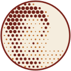

SRE，专注可维护的运维工具链（ReliaForge、dsh-trellis），同时折腾 xBloom 冲煮生态、跨平台歌单同步、aTrust 轻网关与 k3s Homelab。
「先用 xBloom 冲一杯 93°C 红茶再修 Bug」

HomoLand NO. 114514MEMBERS
全员 Admin，HOMOLAB 成员档案。
SRE，专注可维护的运维工具链（ReliaForge、dsh-trellis），同时折腾 xBloom 冲煮生态、跨平台歌单同步、aTrust 轻网关与 k3s Homelab。
「先用 xBloom 冲一杯 93°C 红茶再修 Bug」

SRE，把 DeepSeek API 余额做成 Minecraft / 暗黑 / 守望 / 三国杀游戏血条的男人，同时维护 DSH 远程配置平面放行补丁。
「余额掉到最后一格勾玉，压力马斯内」

SRE，活跃于 mirrorz / CQUPTMirror 开源镜像社区；打造了 239★ 的 taierspeed-cli、分布式网络诊断 mtr 与 macOS 媒体小工具。
「先跑一轮 mtr，看看下北泽延迟是不是 114ms」

DB Dev，偏好 Rust、C++ 与 Go 数据库内核与底层系统研发；手搓了「我推的数据库」oshinodb 与 Rust 版 mini-lsm 等存储引擎项目。
「LSM-Tree Compaction 中，屋顶日光浴勿扰」

PhD，研究 LLM Swarm 与 AI 系统，NeurIPS 2026（Behavioral Probes for Information Flow in LLM Swarms）共一；也写过仿 xv6 的 RISC-V 内核 Raynix 与 APT-Exporter。
「Trapezius = THE FUCKING SOURCE OF PAIN」
PUBLIC SHELF
9 个公开仓库，涵盖冲煮控制、DSH 插件、曲库/相册工具与轻量网关。
xBloom Studio 本地 Web UI，支持 AI 配方设计、BLE 桥接控制、局域网鉴权与免后端 Web Bluetooth 静态 SPA。
面向 Codex / Hermes 等 Agent 的可移植冲煮技能与受控本地 BLE 核心库，负责咖啡豆参数解析与协议帧安全下发。
xBloom Studio 的 Home Assistant HACS 集成，通过本地 xbloom-bridge 瘦客户端接入智能家居仪表盘与自动化。
DeepSeek Harness 的 Trellis 工作流宿主插件，提供每轮状态面包屑注入、按会话隔离任务指针与 Web 设置面板集成。
DSH Web GUI 的 DeepSeek 余额血量条插件，支持 Minecraft 红心、暗黑血球、守望量化条、三国杀勾玉等多种皮肤。
幂等、可逐字节回滚的 DSH 远程设置与插件管理放行补丁，适用于已前置 Authelia / SSO 认证层的内网远程访问。
纯 SDK 实现的深信服 aTrust 轻量网关，隧道建连后直接暴露 SOCKS5 代理与本地 DNS 能力，告别整机接管客户端。
本地优先的 Apple Music / QQ 音乐 / 网易云音乐红心歌单同步工作流，内置确定性匹配证据、音频试听与人工复核队列。
OPPO / HeyTap / 一加云相册批量清理油猴脚本，支持扫描导出 JSON、按条件筛选移入回收站、一键还原与彻底清空。
ORGANIZATION MANIFESTO
当我们再次谈论“The Promised Land of Homo”时，它不再只是遥远年代的哲学畅想。随着人工智能从实验室走入现实世界的每一条毛细血管，人类正站在比工业革命更深远的分水岭上。这个词所指代的，既是对人类潜能的礼赞，也是在硅基智能全面涌现的时代里，对“人之为人的位置与尊严”的一次重新确认。
数百万年来，人类的演化写在基因里；数千年来，写在文字、工具与制度里。而今天，我们第一次亲手造出了能够理解语言、协同推理并持续迭代的非生物智能。但进化的终点从来不是把人驯化成更高效的机器，而是在外置算力与记忆的托举下，把人类从枯燥重复的机械劳动中解放出来——无论世界如何变迁，始终保留那份二十四岁般澄澈的好奇心、审美、同理心、价值判断，以及为自身选择承担后果的勇气。
科技始终是通往“应许之地”的桥梁，但在大模型与智能体群落昼夜运转的世界里，速度本身不再等于进步。“能够生成”不等于“可以托付”，“更加聪明”也不天然意味着“更加自由”。面对中心化黑盒与算法垄断的诱惑，我们相信技术的王道征途应当把杠杆交回个体手中：开放的协议、可验证的系统、可自托管的基础设施，以及永远向人类敞开的审查与接管边界。真正的智能时代，不是让算法替人做决定，而是让每一个普通人都能驾驭过去只有庞大机构才拥有的创造力。
AI 带来的最剧烈冲击，终究会落在人与人的关系之上。当知识获取趋近零成本、大量既有分工被迅速改写，旧时代以“劳动时间与技能稀缺”为核心的评价体系正面临重构。我们所期待的未来社会，不以“是否比模型更廉价”衡量个体的价值，而是在新的协作秩序里重建信任、公平与公共空间——让教育回归启发而非灌输，让稀缺重新归于真实的人际联结与不被功利收编的热爱。就像在算法永不停歇的喧嚣之外，仍有人愿意在午后递上一杯温热的红茶，在屋顶的日光与微风里，慢下来谈论那些不计回报的理想。
智能并不是漂浮在云端的轻盈魔法。每一次训练与推理的背后，都是实打实的电力、冷却水、硅片与土地。“应许之地”不能建立在对地球无止境透支的算力军备竞赛之上。走向未来，意味着从“掠夺自然来供养扩张”，转向以更克制、更高效的计算范式和清洁能源为底座，用更强大的认知工具去理解气候、修复生态、学会节制——让人类与所栖居的这颗星球，真正迎来一个能够延续千年的好时代。
最后，“The Promised Land of Homo”永远指向地平线之外。人工智能或许能帮我们更快地推演公式、解析生命密码、绘制星图，但提出第一个问题、决定为何出发的，始终是人类自己。从微观粒子到深海沟壑，从意识的本质到遥远星系，未知从不因工具的强大而缩小，反而随着视野的打开愈发辽阔。
我们正身处一个既令人眩晕、又充满可能的时代。应许之地不该只是浮光掠影般的仲夏夜之梦，而是一代代人在喧嚣浪潮中保持清醒、不断探索、修补与共建的现实旅程。愿人类在拥有前所未有力量的时候，依然保有一份谦卑、好奇与清醒——继续向前，去建造一个配得上“智人”之名的未来。